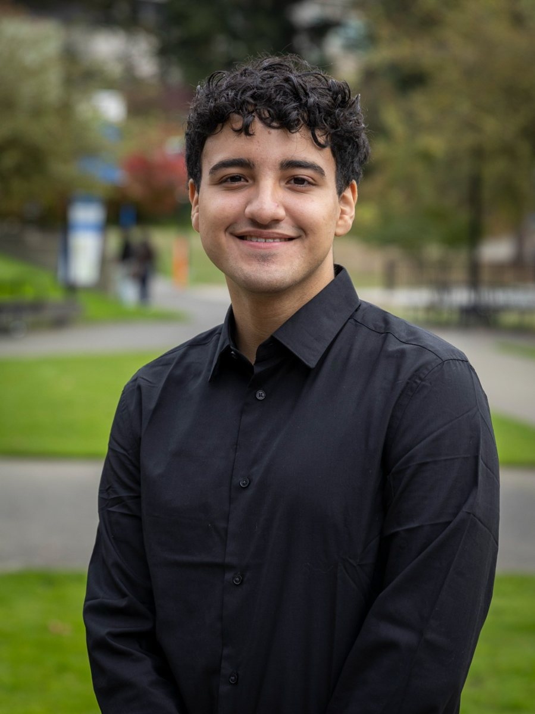
Martin Quijano
PLC automation & documentation
Martin programs the Allen-Bradley PLC and the PowerFlex 527 that run the conveyor, builds the MQTT link to the arm, and leads the team's documentation.
LinkedIn →An open-source SO-ARM101 that sees, picks and sorts plastic bottles and aluminium cans, then checks its own work. Accessible, vision-guided recycling for smaller sorting centres.
We are V.I.S.O.R., a three-person Electronics & Computer Engineering Technology team at Camosun College. We turned an open-source SO-ARM101 robotic arm into a small-scale recycling line: a PLC-driven conveyor delivers each item, the arm identifies it and drops it into the right bin, and a quality-control station checks the result.
01 — The problem
Large material recovery facilities (MRFs) rely on optical sorters and robots that small recycling centres cannot afford. Mixed streams then end up hand-sorted, or not sorted at all.
V.I.S.O.R. scales the MRF idea down to a single workstation built from open-source parts, so a small centre can start automating with hardware it can afford and repair.
02 — How it works
An Allen-Bradley PLC runs the conveyor and stops it the moment a sensor detects an item at the pick point.
A USB camera feeds a custom-trained YOLO model on a Raspberry Pi 5 with an AI HAT, which labels the item as a plastic bottle or an aluminium can.
An imitation-learning policy (ACT, trained in LeRobot on our own demonstrations) drives the SO-ARM101 to grasp the item and drop it in the matching bin.
A second Raspberry Pi with a Pi camera checks each sorted item and shows the result, with live counts, on a TFT screen.
03 — The system
Each subsystem has an owner. Integration ties them together over Ethernet (MQTT), USB and Wi-Fi.
We recorded demonstration episodes by guiding a leader arm while the follower copied every servo move. LeRobot trained an Action Chunking Transformer (ACT) on those episodes, so the follower now picks items on its own.
A load-and-position guard watches the gripper servo and stops the squeeze before it overloads, which protects both the motor and the bottle. Rerun graphs every motor's activity so we can track stability.
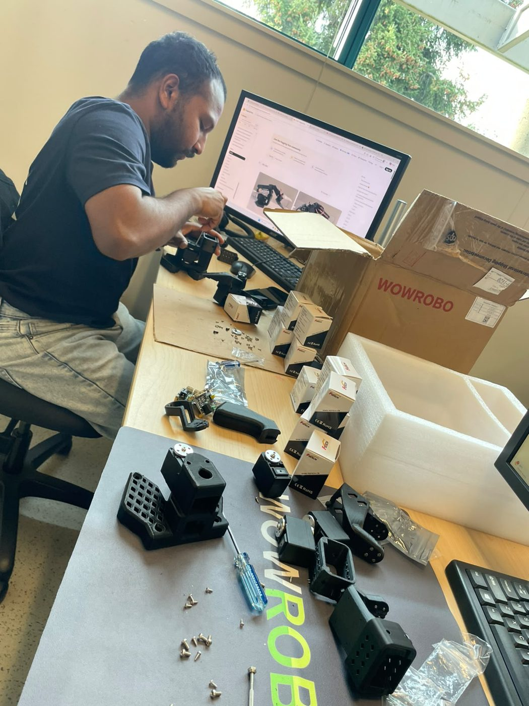
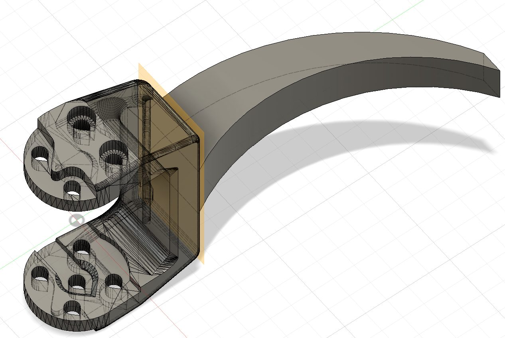
We trained a custom YOLO object detector on two classes, plastic bottles and aluminium cans, using datasets from Roboflow. OpenCV manages the camera stream on the Raspberry Pi 5, and an AI HAT speeds up the inference.
The detector draws a box, assigns a class and reports a confidence score for every item in frame.
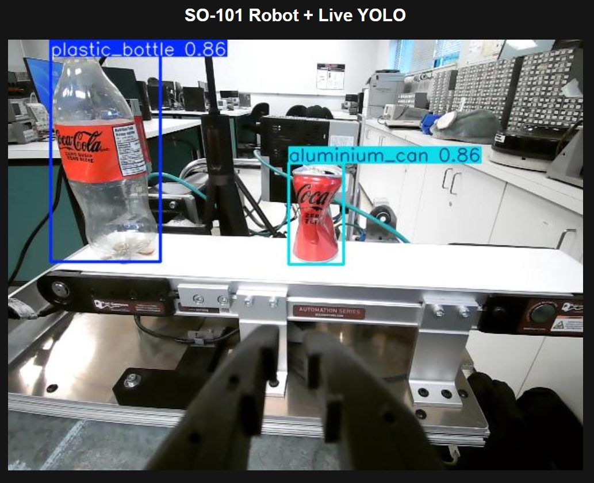
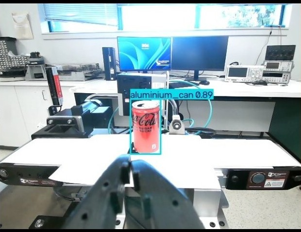
Ladder logic written in Studio 5000 Logix Designer runs the conveyor through a PowerFlex 527 drive. A proximity sensor stops the belt at the pick point, and a GuardShield light curtain guards the work area.
The PLC will exchange messages with the Raspberry Pi 5 over MQTT, through a Mosquitto broker on a Stratix 5700 Ethernet network.
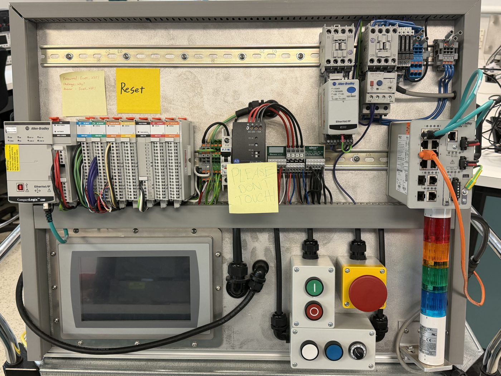
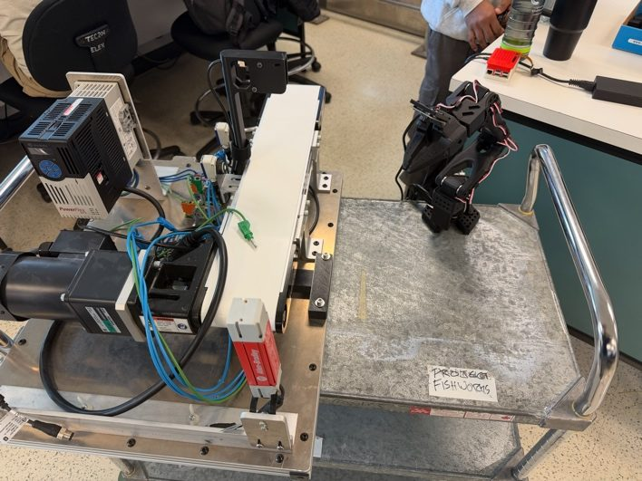
A Raspberry Pi 4 with a Pi camera watches the sorted items. A two-stage model, YOLO11n to find each item and MobileNetV3 to confirm whether it is a bottle or a can, draws boxes, labels and counters on every frame.
A Flask server shares the processed image over Wi-Fi. An ESP32 DevKit fetches and decodes it, then shows the live feed and a count for each container on a TFT touch screen. When a container is full, the screen tells staff to empty it and press its reset button. The electronics sit on a custom PCB in a snap-fit enclosure.
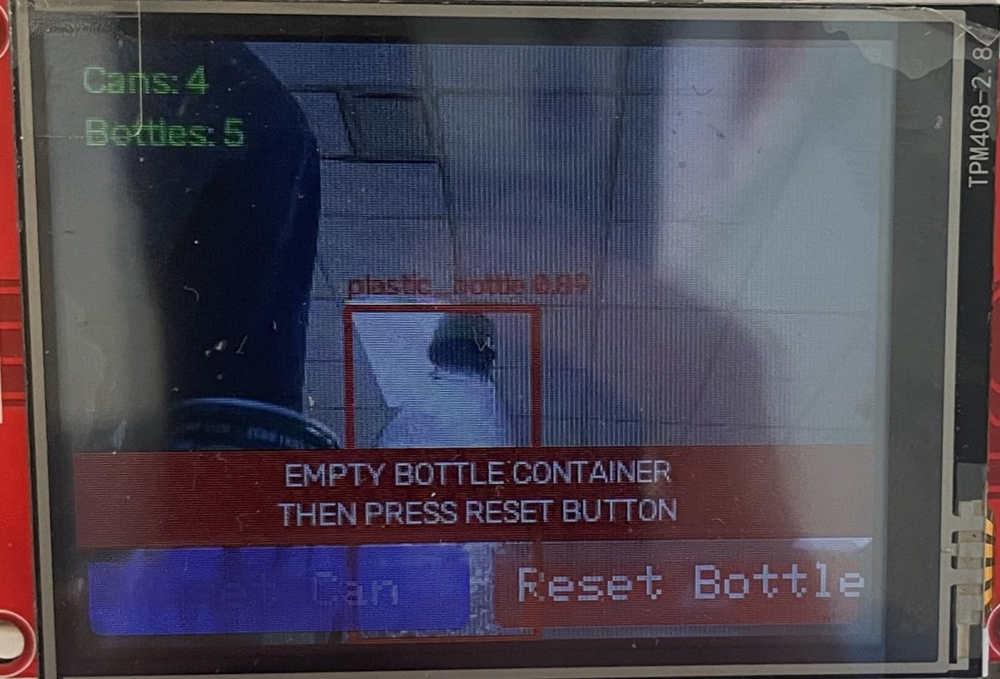
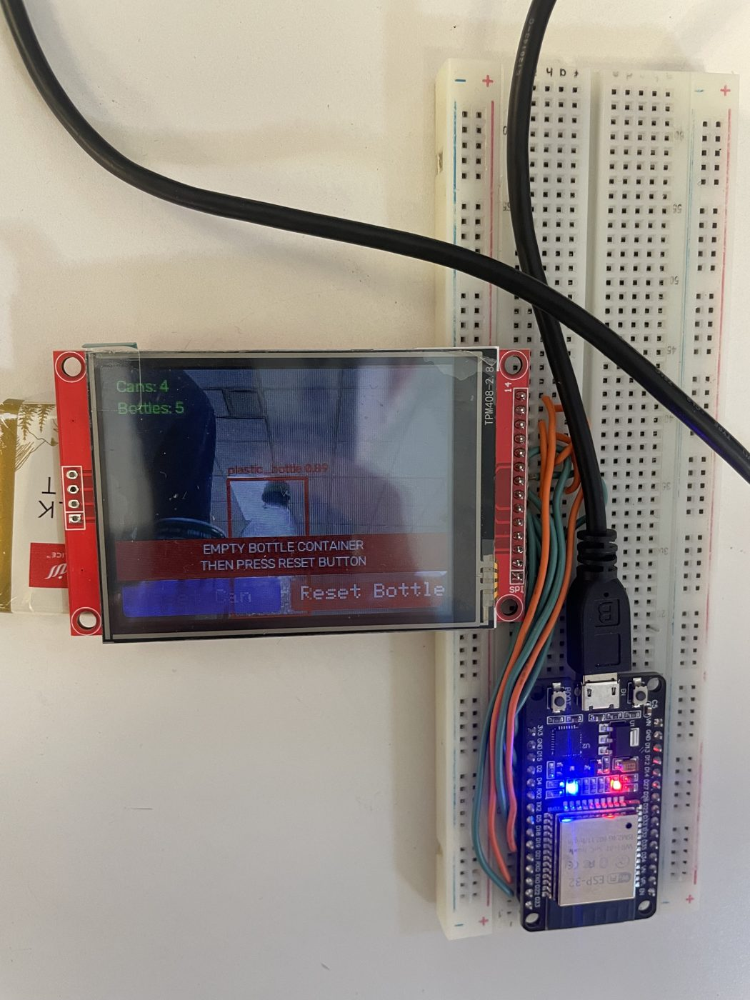
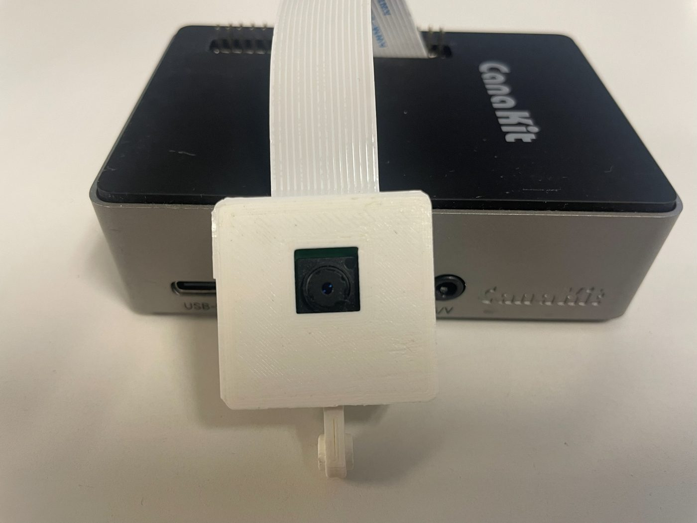
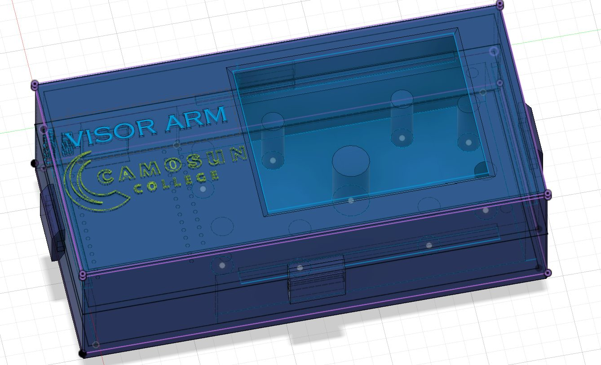
04 — Demo
Week 8 test: the SO-ARM101 picks an aluminium can from the conveyor and drops it into the correct bin.
05 — Our progress
Two SO-ARM101 arms arrive; leader–follower teleoperation runs the same week.
The follower arm completes its first autonomous moves from recorded episodes.
YOLO detection is complete; the arm moves to a Pi 5 with an AI HAT; the TFT shows live video from the Pi 4.
First full integration with the conveyor; the PCB is designed and ordered.
The snap-fit enclosure for the quality-control display is designed and tested.
A gripper guard ends servo overloads; work continues on the MQTT link and a redesigned gripper.
Live demonstration at the Camosun Capstone Symposium.
06 — The team
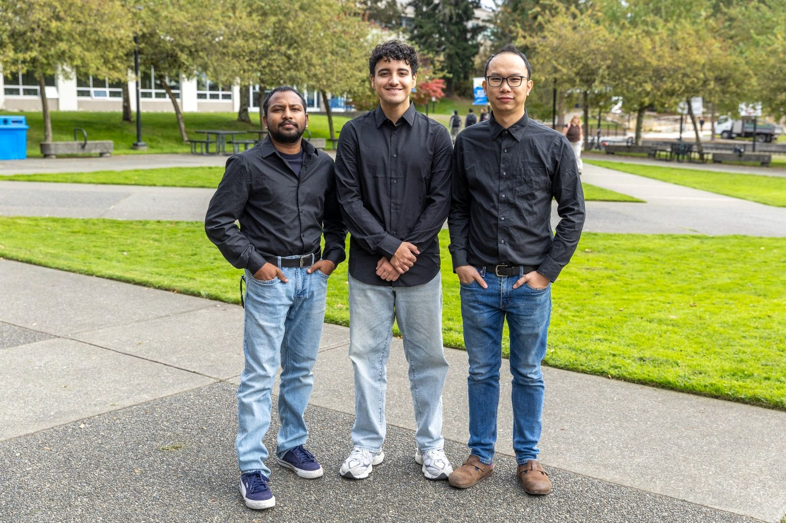

PLC automation & documentation
Martin programs the Allen-Bradley PLC and the PowerFlex 527 that run the conveyor, builds the MQTT link to the arm, and leads the team's documentation.
LinkedIn →IoT design & smart receptacles
Chan builds the quality-control station: the Pi 4 camera and its detection model, the ESP32 TFT display, the custom PCB and the snap-fit enclosure.
LinkedIn →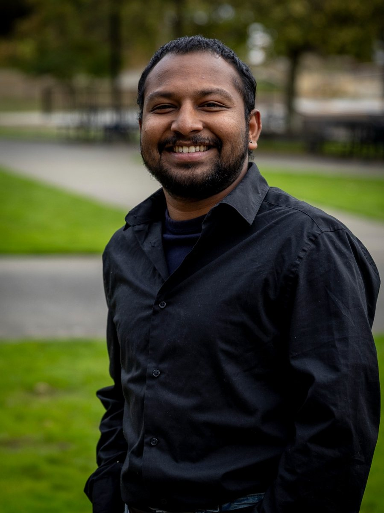
SO-101 training & object detection
Dileesh builds and trains the SO-ARM101 and integrates object detection: YOLO on the Raspberry Pi 5, ACT imitation learning in LeRobot, and the arm's control software.
LinkedIn →07 — Documents & code
08 — User manual
Our 15-page manual walks an operator through safe set-up, start-up, sorting and shutdown, with numbered steps, ten figures and a troubleshooting table.
Download the manual (PDF)09 — Thank you
We thank the Camosun College ECET department and our instructors Mel Dundas, Wayne Mayes and Justin Curran for their guidance, design reviews and lab equipment, including the conveyor, PLC and PowerFlex drive that make our line possible.
We built V.I.S.O.R. to show that automated sorting can start small. We look forward to seeing it grow into a tool that helps more communities recycle more.